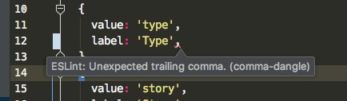
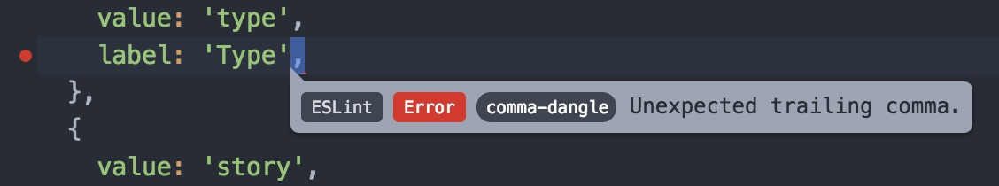
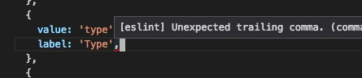

IDE Integration
PHPStorm

- download
/static/PHPStorm_Code_Inspector.xmland/static/PHPStorm_Code_Style_Javascript.xmlin this github repo. - import
PHPStorm_Code_Inspector.xmlto Preferences > Editor > Inspections in PHPStorm - import
PHPStorm_Code_Style_Javascript.xmlto Preferences > Editor > Code Style > Javascript
To Import, navigate to the respective preference view, click on the "Manage..." button, then Import.
All ESlint errors are now shown as inspection errors (with the red underline).
You can simply press alt+cmd+L to auto format the current file, and will fix about 90% of eslint errors.
Atom

- install
linter-eslintin atom preferences - As you type, you'll see eslint errors
Sublime Text
- install Sublime Text ESLint Package (follow instructions)
Optionally install
https://packagecontrol.io/packages/ESLint-Formatter
Visual Studio Code

- click on extensions and search for "ESLint"
- Download ESLint
- Click Reload